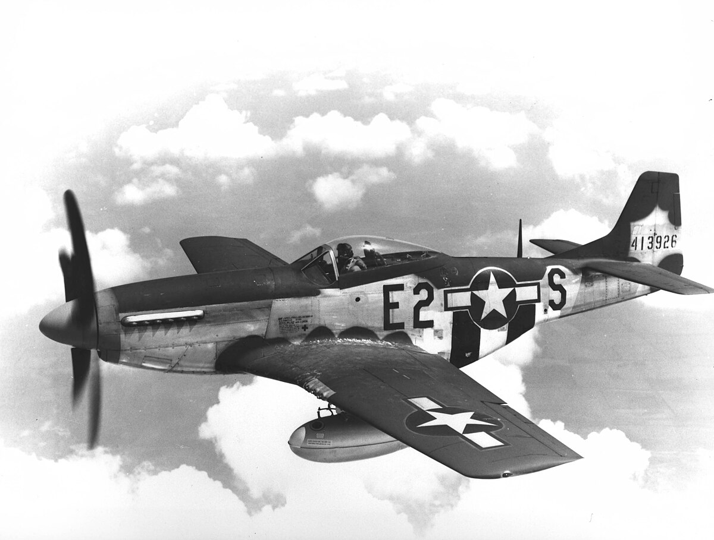

El Hawker Hurricane fue un caza monoplaza británico desarrollado en la década de 1930 por Hawker Aircraft bajo la dirección del diseñador Sydney Camm. Fue el primer caza monoplano británico capaz de superar las 300 mph (aproximadamente 480 km/h) y entró en servicio con la Royal Air Force (RAF) a finales de 1937, marcando un importante avance tecnológico frente a los biplanos de entreguerras.
Durante la Segunda Guerra Mundial, el Hurricane fue una de las piezas clave de la defensa aérea británica, especialmente en la Batalla de Inglaterra (1940), donde consiguió aproximadamente el 60 % de las victorias aéreas de la RAF frente a la Luftwaffe, a menudo en mayor número que su compañero más famoso, el Spitfire. Servió en prácticamente todos los teatros de la guerra y se empleó no solo como caza interceptor, sino también adaptado a roles de cazabombardero, apoyo aéreo cercano, y en variantes navales como el Sea Hurricane, que operaron desde buques o fueron adaptados para escoltar convoyes.
El Hurricane combinaba un diseño robusto y fiable con un motor Rolls-Royce Merlin V12 que le proporcionaba una velocidad máxima de alrededor de 550 km/h y un alcance operativo considerable, además de una estructura que facilitó su modernización continua a lo largo de la guerra. Su armamento también evolucionó: los primeros modelos llevaban múltiples ametralladoras, y las versiones posteriores integraron cañones más pesados, bombas y cohetes para roles de ataque al suelo. Aunque con el tiempo fue superado en rendimiento por cazas más modernos, su versatilidad y facilidad de mantenimiento lo mantuvieron en servicio durante todo el conflicto. En total se construyeron más de 14 000 unidades, muchas de las cuales fueron suministradas a fuerzas aliadas como la Unión Soviética, y algunas sobreviven hoy en museos o vuelos conmemorativos, testimonio de su importancia histórica.
| |
|
|
|  |
|
|